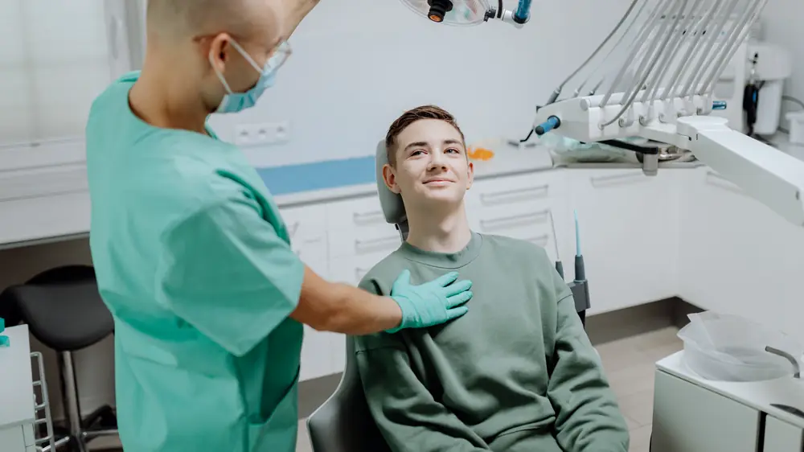
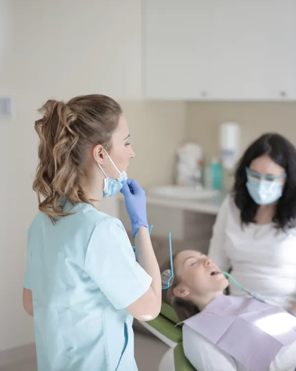
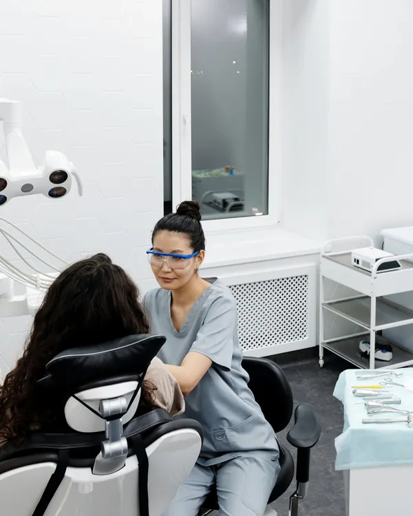
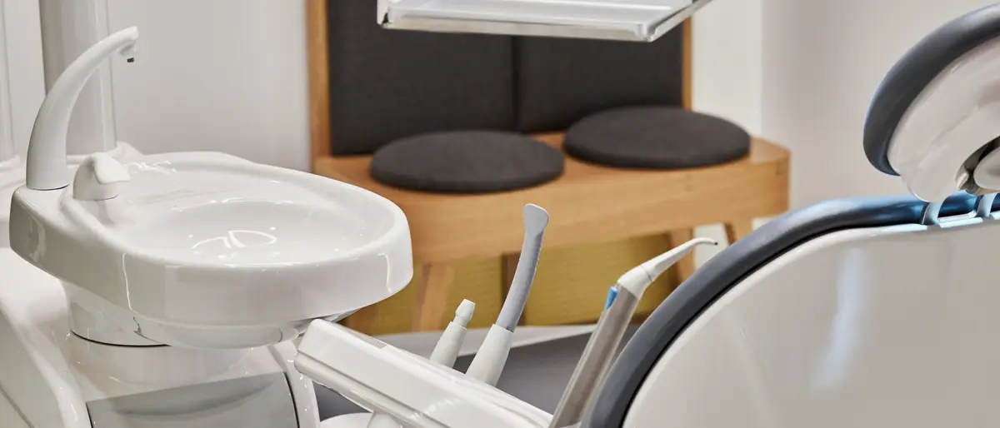
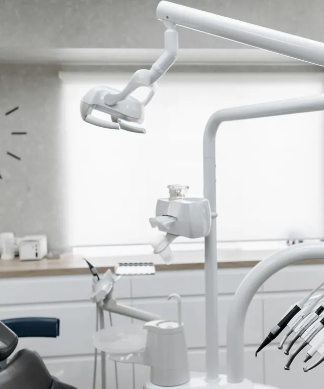

01
Плановий огляд
Коли нічого не болить, це найкращий час показатися стоматологу. Проблему, помічену рано, простіше вирішити.

Коростень · стоматолог
Приймаємо з понеділка по суботу. Запишіться за телефоном, і домовимось про зручний час.
Коли прийти
Не обов’язково чекати, поки заболить. Ось із чим до стоматолога приходять найчастіше.
01
Коли нічого не болить, це найкращий час показатися стоматологу. Проблему, помічену рано, простіше вирішити.

02
Не відкладайте. Зателефонуйте, коротко опишіть, що турбує, і домовимось про найближчий вільний час.

03
Не знаєте, з чого почати лікування? Стоматолог огляне, пояснить, що бачить, і які є варіанти.

Оцінка в Google Maps
Середня оцінка картки «Стоматологія» на Сосновського, 2 у Google Maps, 9 відгуків. Станом на жовтень 2026 року.
Відгуки в Google Maps
Графік
Перед візитом краще зателефонувати й домовитися про зручний час.
+380 97 721 2755, у робочі години.
Скажіть, що турбує, і оберіть зручний день.
Вулиця Сосновського, 2, Коростень.
Як знайти
Адреса
вулиця Сосновського, 2
Коростень, Житомирська область, 11500
Графік
Пн-Пт 09:00-17:00, Сб 10:00-15:00, Нд вихідний
Контакти
Найшвидше записатися за телефоном. Якщо зручніше написати, залиште повідомлення, і ми передзвонимо.
+380 97 721 2755вул. Сосновського, 2, Коростень
Пн-Пт 09:00-17:00, Сб 10:00-15:00